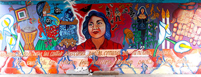
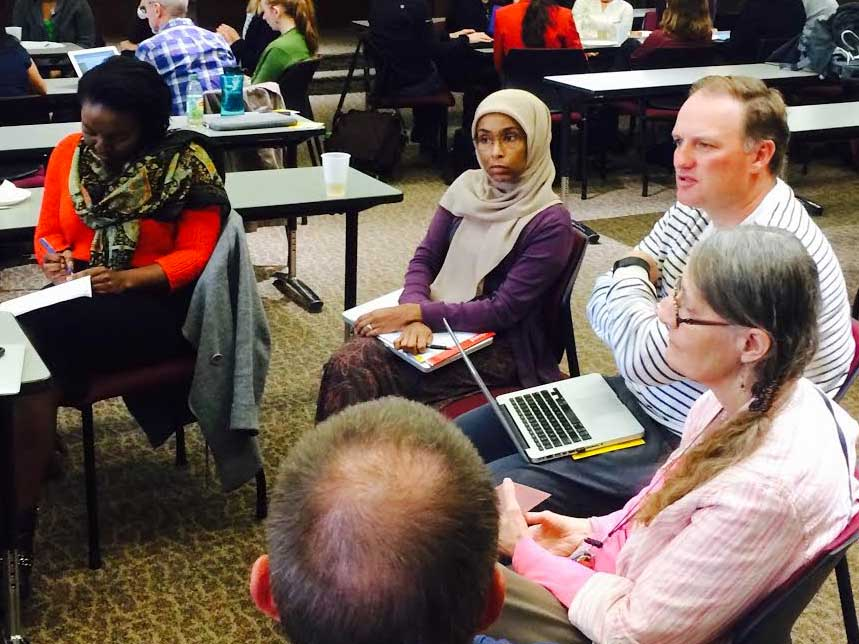
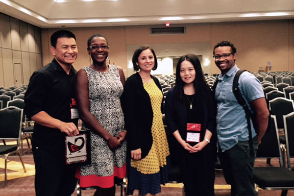

Reimagining Education
Research, Equity, and Teaching

In the news
Boulanger receives World Language Teacher of the Year
Grant Boulanger, Spanish teacher at Skyview Middle School in the North St. Paul, Maplewood, Oakdale district and C+I graduate, was chosen as the Minnesota World Language Teacher of the Year. Read more

Strength lives in languages
Jenna Cushing-Leubner works with teachers and multilingual youth to create learning spaces where languages bring knowledge from many places. Read more
Chhuon receives Presidential Research Award
Vichet Chhuon is the 2015 recipient of the prestigious Carl A. Grant Presidential Research Award, awarded to an exemplary multicultural educator who has demonstrated a long-term scholarly commitment to multicultural education. Read more

Teachers of Color working group
The aim of the Teachers of Color (TOC) working group is to engage in collective learning centered on issues of social justice in education. The group also seeks to better understand how our college can continue to increase racial diversity both within its programs and among the faculty and staff.
Over 40 people attended the last TOC meeting including faculty, advisors, staff, and representatives from C&I, student services, ICD, EdPsy, TRIO, the Dean's Office, and OTE.

Responding to Rage and Resistance in the Classroom
C&I PhD Students, Keitha-Gail Martin-Kerr (Literacy Education) and Ezekiel Joubert III (Culture & Teaching) recently led a session called "Responding to Rage and Resistance in the Classroom: Lessons Learned from Critical Multicultural Educators of Color " as part of the National Association for Multicultural Education's 2015 Silver Anniversary Conference in New Orleans, Louisiana.
Other participants included Rachel Endo (Hamline University), Norma Marrun (Duke University), and Vichet Chhuon (Culture & Teaching).